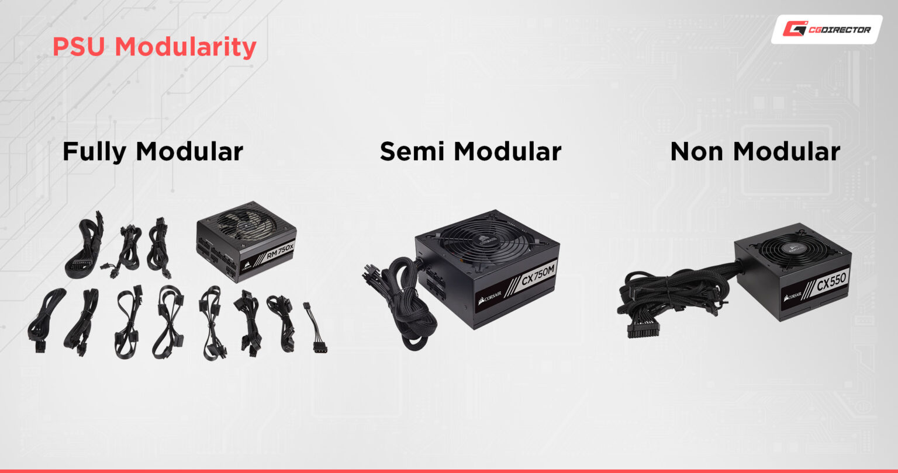

A számítógép részei
Egy számítógép részei:
- alapgép
- billentyűzet, egér
- monitor
- egyéb perifériák
- beviteli eszközök: pl.: scanner, mikrofon, érintő képernyő...
- kiviteli eszközök: pl.: nyomtató, hangszóró....
Az alapgép részei
- számítógép ház
- tápegyszég
- alaplap
- CPU (Central processing Unit - Központi feldolgozóegység
- memória
ezen belül vannak a számítógép legfontosabb részei
létezik fix kábelezésű, félmoduláris, moduláris és server tápegység

A tápegység kiválasztásánál figyelembe kell venni számítógépünk alkatrészeit és felhasználását, fontos tisztában lennünk mi mennyi áramot fogyaszt és miként használjuk majd gépünket. A tápegységet érdemes túlméretezni, hogy biztosan el tudja látni megfelelő árammal számítógépünket, ha huzamosabb ideig nagy terhelésnek tesszük ki gépünket érdemes jobb minőségű (bronz, gold, silver, platina) tálpot venni, melyek bírják a 7/24-es üzemet is akár.

ez biztosítja az összeköttetést a különböző részek között, az alaplapon helyezkedik el a processor, memória, videókártya és egyéb perifériák.
Két fő tipusát különböztetjük meg AMD és INTEL. Fontos a megfelelő hűtés biztosítása. Feladata az utasítások feldolgozása és továbbítása